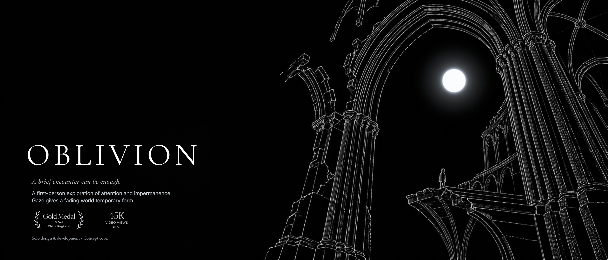
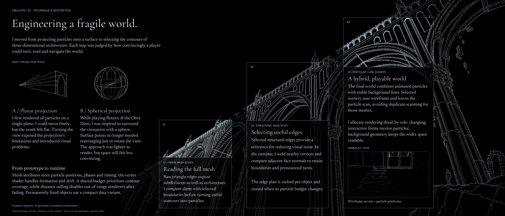
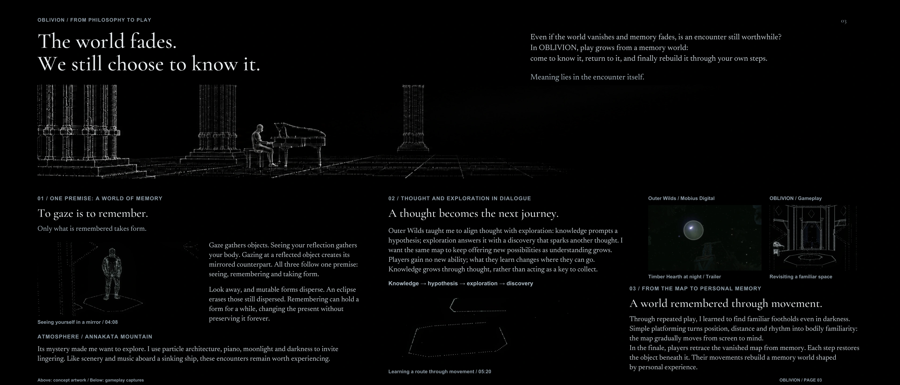
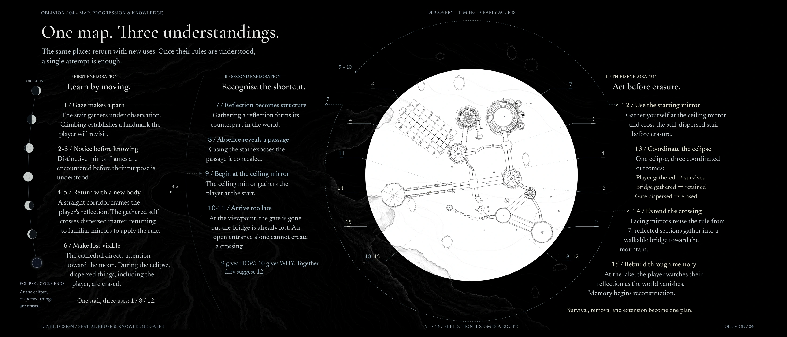
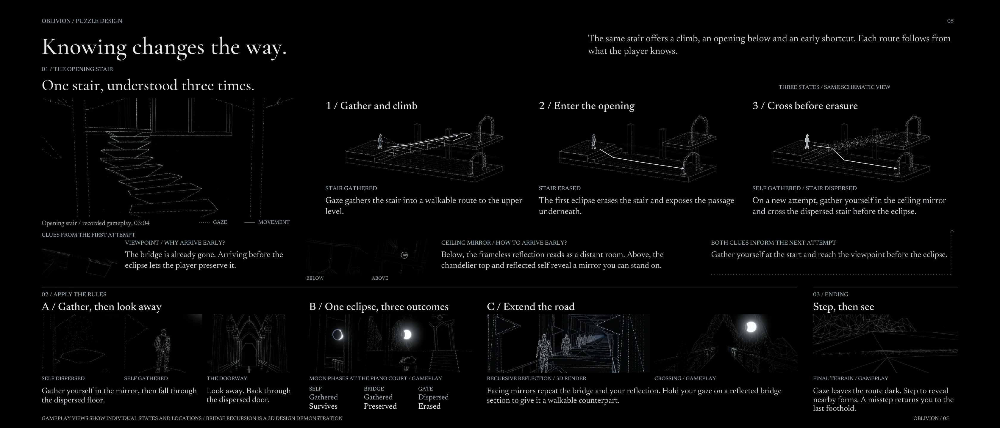
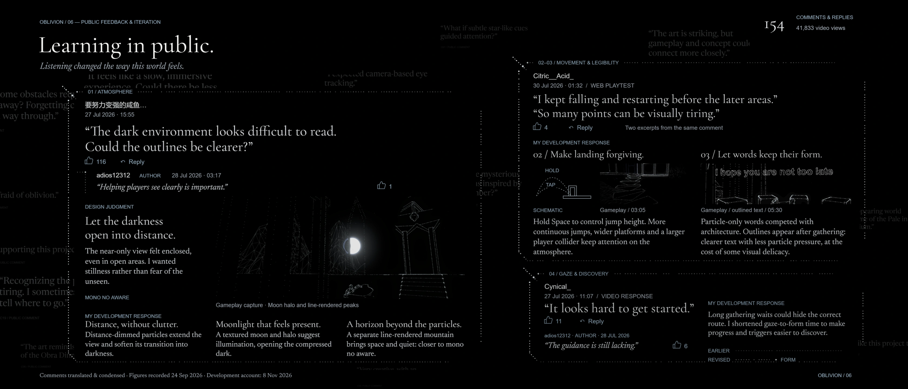

01 / A brief encounter can be enough.
OBLIVION
A first-person exploration of attention and impermanence. Gaze gives a fading world temporary form.

Solo design and development · BYAA China Regional Gold Medal · 45K Bilibili video views
02 / Technique and aesthetics
Engineering a fragile world.
The renderer evolved from planar and spherical particle projection to the contours of 3D architecture. Each step tested whether players could turn, read the structure and find their way.

From projection to 3D contours
Turning exposed the flatness of the first projection. Inspired by Return of the Obra Dinn, a spherical projection reduced the cost of turning the view. The next step used actual architectural contours to ground the space.
Particles and lines in the same world
Open boundaries and sharp turns survive the comparison with the full mesh. Edge samples are cached per object, and vertex shaders handle gathering, dispersal and drift. Stable background lines give players landmarks while particles serve objects that change or respond.
Wireframe terrain and particle platforms · 9 seconds of gameplay
03 / Gameplay and philosophy
The world fades. We still choose to know it.
To gaze is to remember. Only what is remembered takes form. Even if the world and its memory fade, the encounter itself has meaning.

Gaze and forgetting
Gaze gathers objects, seeing your reflection gathers your body, and looking at a reflected object creates its counterpart. Looking away lets mutable forms disperse. An eclipse erases what is still dispersed.
A thought becomes the next journey
Outer Wilds inspired a loop in which knowledge prompts a hypothesis, exploration yields a discovery and that discovery sparks another thought. Particle architecture, piano, moonlight and darkness invite players to linger.
Rebuilding a world through movement
Repeated visits build a bodily memory of footholds, distances and rhythms. In the finale, players retrace the vanished map from memory, bringing objects back into form with each step.
04 / Map and knowledge
One map. Three understandings.
The same places return with new uses. Once their rules are understood, a single attempt is enough.

01–06 · Learn by moving
Gather and climb the stair, then notice mirror frames before knowing their purpose. The corridor frames a reflection and teaches the gathered body to cross dispersed matter. The cathedral draws attention to the moon, and the first eclipse erases what is still dispersed.
07–11 · Recognise the shortcut
Gathering a reflection forms its counterpart in the world. Erasure exposes the route under the stair, and the ceiling mirror offers an earlier way to gather yourself. At the viewpoint, the gate is gone and so is the bridge. The crossing depends on arriving earlier.
12–15 · Act before erasure
Gather yourself at the starting mirror and cross the dispersed stair. Before the eclipse, gather yourself and the bridge while leaving the gate dispersed. Extend the crossing with facing mirrors, reach the lake and begin reconstructing the world from memory.
05 / Puzzle design and finale
Knowing changes the way.
The same stair offers a climb, an opening below and an early shortcut. Each route follows from what the player knows.

Three uses for the same stair
Gather the stair and climb. After the eclipse erases it, enter the opening below. On the next attempt, use the starting ceiling mirror to gather yourself and cross the still-dispersed stair before the eclipse.
One eclipse, three outcomes
Gather your reflection, then look away and back through the dispersed gate. Enter the eclipse with your body and bridge gathered and the gate dispersed. The body and bridge remain while the gate disappears.
Mirrors extend the road, footsteps restore the world
Facing mirrors repeat sections of the bridge. Gaze at a reflected section to bring its counterpart into form. In the finale the road stays dark under your gaze, and stepping reveals the forms nearby.
Facing mirrors · 3D mechanism demonstration
06 / Public feedback and iteration
Learning in public.
Three public discussions inform four design changes. The page brings together the original feedback, recorded replies and later development decisions.

Let the darkness open into distance
A viewer found the outlines hard to read in the dark. Development extended the particle range with distance fading, gave the moon a textured face and halo, and drew distant mountains with independent lines.
Make landing forgiving
A web player described repeated falls and restarts. Holding Space varies jump height, and larger platform and player colliders give landings more room.
Let words keep their form
The same player also found the point-based visuals tiring. Adding outlines after text gathers improved legibility and freed particles for the architecture around it.
Shorten the wait for gathering
One viewer felt the game looked hard to get into, and the author acknowledged the lack of guidance. Shortening the time from gaze to gathering later made routes and mechanisms easier to reveal.
Feedback figures were recorded on 24 September 2026. 154 comments and replies, and 41,833 video views.